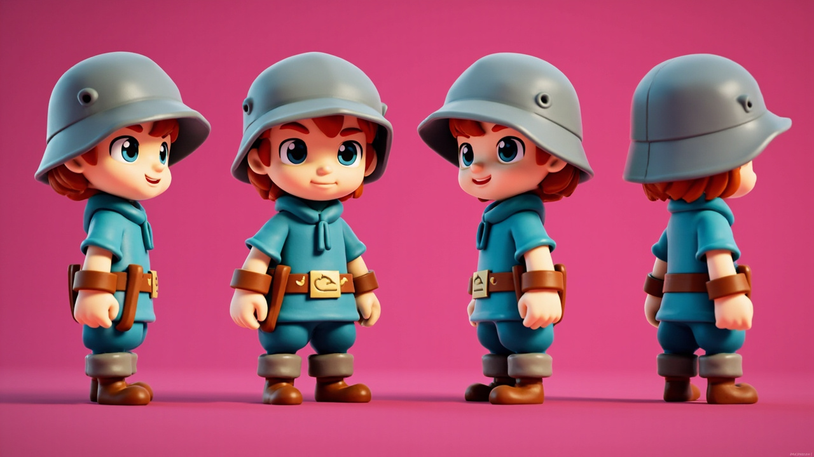
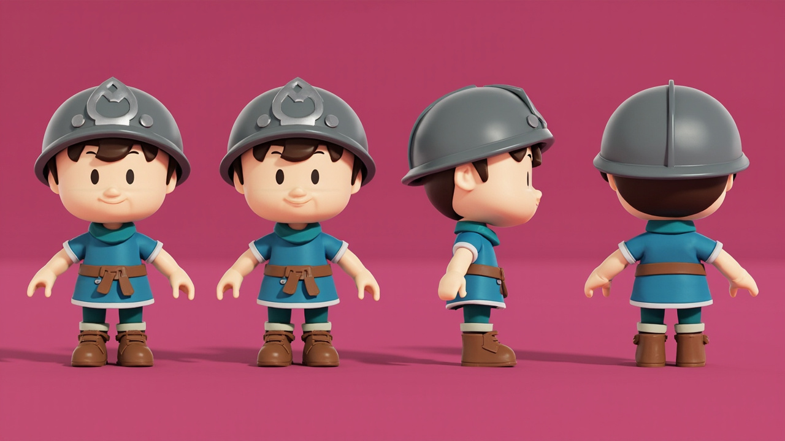
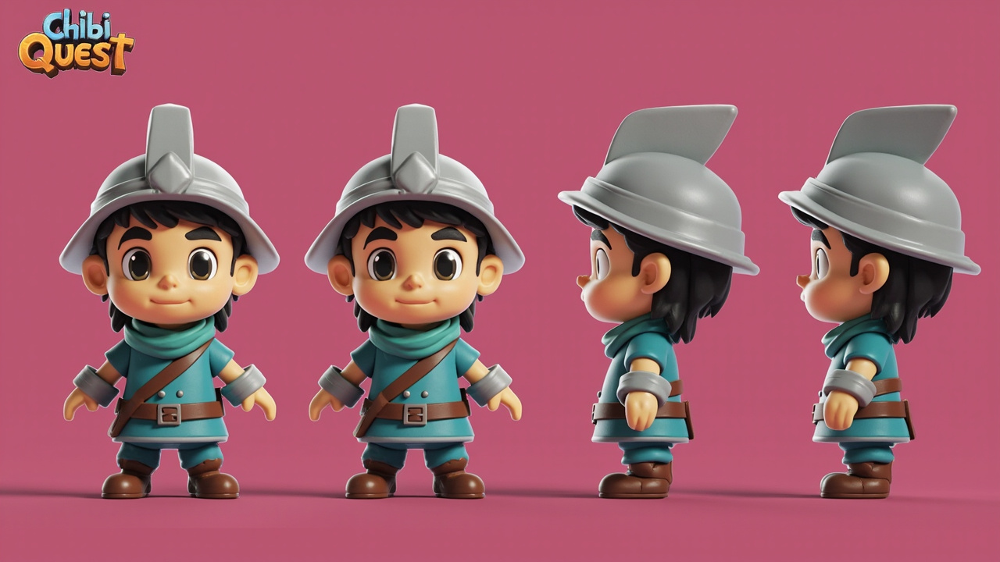
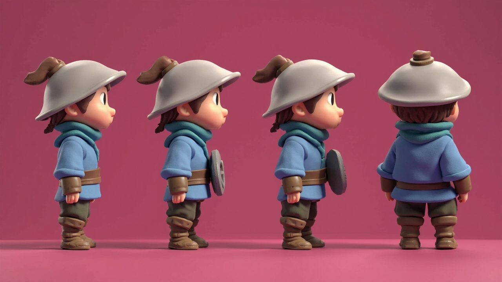
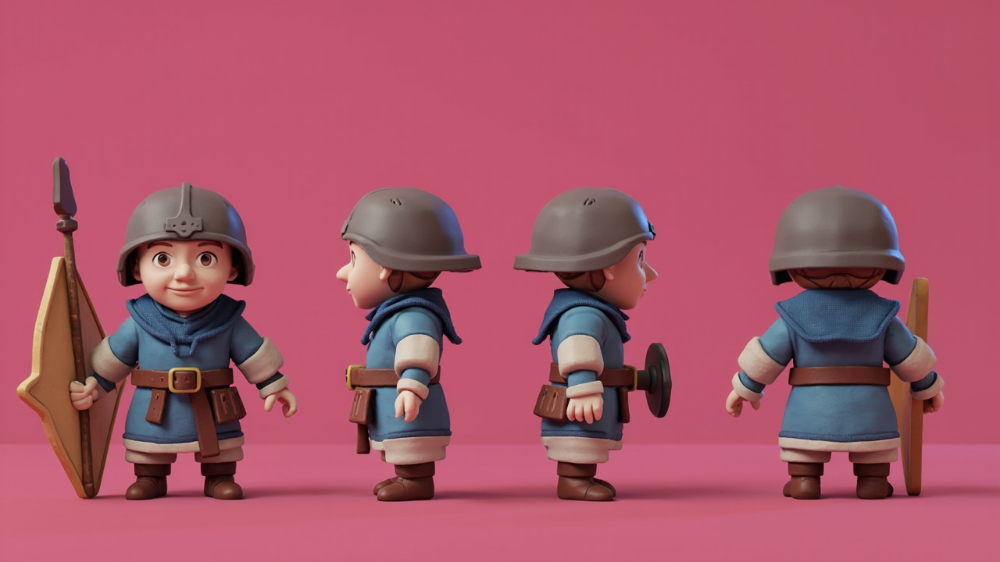
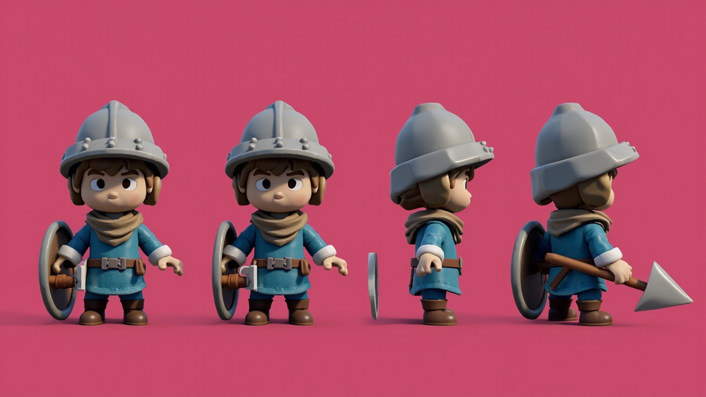
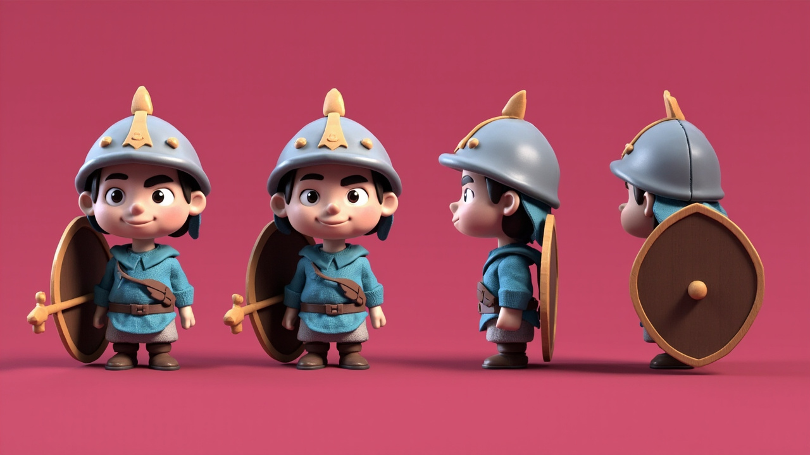
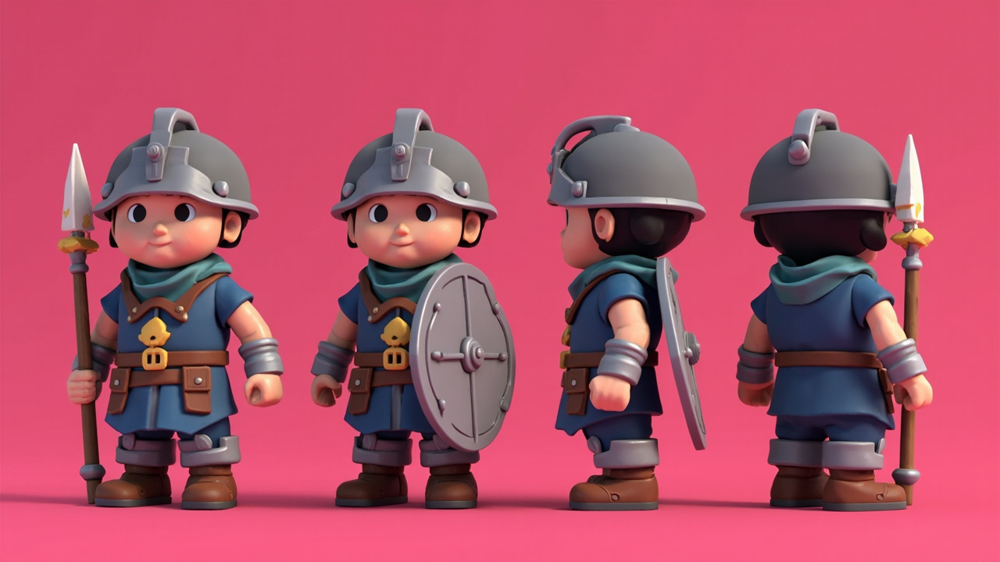

Non-shipping generated design evidence. Selection here chooses a structural modeling target only; it does not accept a Forge model, sprite, animation, or theme-pack asset.

Secondary art directionStrong personality and chibi proportions; views are too three-quarter-oriented for structural truth.

Selected structural targetBest consistent front, side, and back coverage; simple geometry and no held-equipment drift.

RejectedGenerated logo/text and incomplete orthographic coverage.

RejectedAccidental shield carryover and no true front view.

Rejected equipped batchUseful style evidence, but equipment and view coverage are inconsistent.

Rejected equipped batchRepeated front view and equipment drift.

Rejected equipped batchRepeated front view and weapon/shield drift.

Rejected equipped batchClear equipment but insufficiently chibi and inconsistent loadout across views.